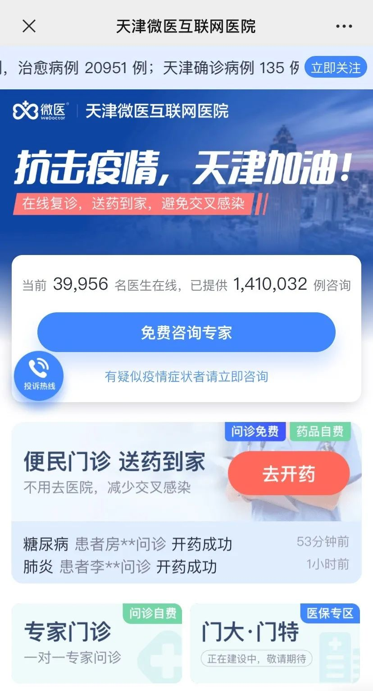
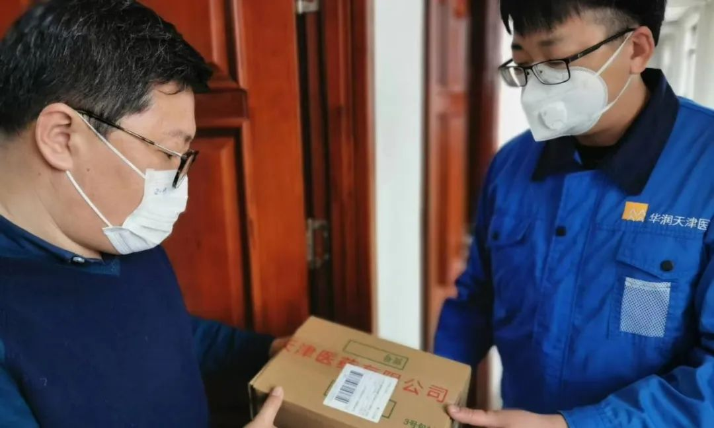

这个头条，我们留给非肺炎患者
原文链接 备份链接 新冠肺炎疫情的防控正在逐步进入平稳轨道。全国31省市报告确诊病例在逐日减少，医院扩建、全民隔离，一部分患者也陆续出院。 这场前所未见的疫灾，让多少人体会了一次死里逃生。但与此同时，还有另一部分人，在依然严峻的寒冬冰封里 …

从线下到线上，从疫情时期到常规医疗，天津“微医模式”或将成为各地参考借鉴的范例。
全文5588字，阅读约需11分钟
从大年初一开始，天津医院感染免疫科副主任刘秀婵有了两个新身份。
穿上防护服戴上口罩，她是支援天津医院发热门诊的临床医生;脱下防护服拿起手机，她是天津微医互联网医院“新冠肺炎实时救助平台”的一名线上医生。
除夕夜，在天津市卫健委、医保局和市委网信办的统筹指挥下，天津微医互联网医院火速上线。像刘秀婵一样，全国通过微医互联网医院参与线上“抗疫”的医生，截至2月18日，已经有37277名，累计提供医疗咨询服务136.64万人次。

▲天津微医互联网医院问诊界面。
除针对新冠肺炎的免费义诊之外，围绕慢性病和常见病的便民门诊、心理援助专区和医护人员心理关怀通道也快速开通，天津微医互联网医院率先成为天津抗击疫情的“第二战场”。
不久前，国家卫健委印发通知，要求各地在疫情防控工作中充分利用“互联网+医疗”的优势，推动互联网诊疗咨询服务在疫情防控中发挥更为重要的作用，让人民群众获得及时的健康评估和专业指导，精准指导患者有序就诊，有效缓解医院救治压力，减少人员集聚，降低交叉感染风险。
从线下到线上，从疫情时期到常规医疗，天津“微医模式”或将成为各地参考借鉴的范例。
━━━━━
医生“上线”
刘秀婵是1月25日进入医院发热门诊工作的。
“1月中旬，医院就开始在全院范围内给医护人员做关于传染病接诊和收治的相关培训，所以当时大家都已经紧张起来，随时准备着。”刘秀婵说，随着发热门诊人数越来越多，需要大批医生支援，她也第一时间前往发热门诊。
也是在同一天，刘秀婵接到天津微医互联网医院的电话，希望她能参与“新冠肺炎实时救助平台”的在线问诊。
“发热门诊早中晚班交替，一进去就得连续工作7个小时，有时候还得上10个小时，防护服都不能脱。”刘秀婵也想过，自己能忙得过来吗?
但她很快就说服了自己，决定在线上为有需要的人提供免费咨询。“我本身是免疫专业的，对疫情的相关情况也比较了解了，能够通过互联网为更多人提供咨询，让他们少跑医院，避免交叉感染的风险，我觉得是一件很好的事情。”
入驻“新冠肺炎实时救助平台”提供在线咨询的，还有菊梅消化中心病区主任、解放军总医院第五医学中心中西医结合科原主治医生杨慧银。
2003年亲临“非典”一线的经历，让杨慧银很早就对疫情有更高的警惕。
“当时我的工作单位是原解放军第302医院，它是全军唯一的一家三甲传染病专科医院，我们离‘非典’很近，管理非常严格正规，因此对传染病和隔离的知识也有更多的了解，会格外注意一些。”
忙完每天的日常工作，杨慧银会将大部分精力投入到线上。“晚上12点之前都会随时在平台上接诊。”
在杨慧银看来，这也是她参与到“抗疫”医疗战线中的一种方式。“没有办法到一线去做贡献，在后方力所能及地尽一份力量，内心也觉得非常激动和荣幸。”
━━━━━
另一种“抗疫”
跟刘秀婵和杨慧银一样的医生还有很多，截至2月18日，通过天津微医互联网医院参与线上“抗疫”的医生已经有37277名。
天津微医互联网医院在除夕夜火速上线。
彼时，新冠肺炎疫情正在全国范围内蔓延，各地医院发热门诊就诊人数激增，一线医护全面进入“备战”状态。
为减少民众就医交叉感染风险，助力疫情风险防控，天津市卫健委联合天津微医互联网医院在全市开展互联网医院线上义诊行动，鼓励全市医师利用业余时间为天津和全国群众提供不限次、全免费健康问诊咨询服务。
截至2月13日24时，“新冠肺炎实时救助平台”发现新冠肺炎可疑病例1354例，并在医患合作下，将可疑病例向各地疾控部门上报。
微医互联网总医院相关负责人张颂奇介绍，通过“新冠肺炎实时救助平台”，用户可以在线免费咨询专家、进行心理健康咨询;领取《新型冠状病毒感染的肺炎防治知识问答》，掌握专业科普知识;利用便民门诊线上开药，享受送药到家服务;同时可以关注天津地区疫情动态，掌握最新疫情信息。
据其介绍，目前全国范围内的平台义诊和便民门诊都是免费的，“患者进入新冠肺炎实时救助平台或进入天津微医互联网医院，注册登录后，可以自主选择图文问诊、视频问诊、电话问诊并填写诊前问卷描述病情。”
张颂奇说，为保证医生全面了解情况，患者还可以选择上传就诊病历、影像报告、检查检验报告，与医生在线沟通。
天津微医互联网医院甫一上线，来自当地和全国各地、尤其是武汉地区的问诊需求大量涌入，每分钟问诊量达五六十人次。
2月13日，杨慧银就接到了一位来自湖北地区的患者求助。
“这是一位对自己对他人都比较负责的患者。他是在出现感冒症状后，及时去医院做了排查，血常规和CT影像都显示正常，也没有提示新冠肺炎的可能。但患者本人非常焦虑，感觉有被传染的风险。”
通过详细的图文聊天和电话沟通后，杨慧银告诉这位患者，平常心对待，同时做好隔离。
杨慧银说，类似这样因为怀疑自己感染而前来咨询的人不在少数，“这种情况下，感觉自己实际上是在为对方进行心理疏导。”

▲天津医科大学总医院呼吸科主治医师万南生正在线上问诊。
━━━━━
疫情时期的心理关怀
为应对疫情造成的普遍心理创伤，“新冠肺炎实时救助平台”特别开设心理援助专区。
天津微医互联网医院联合中国灾害防御协会社会心理服务专业委员会、中国心理卫生协会心理治疗与咨询专业委员会及志愿者团队，在心理援助专区面向所有网友提供自测预判、咨询专家等心理服务。
针对疫区最为常见的创伤后应激障碍(PTSD)、焦虑、抑郁，网友可通过7至17题的自测提问，完成初步评估，自测会根据评估结果推荐是否需要进一步咨询心理专家。
据悉，第一批上线的百名心理专家团队，主要由精神科医生、心理咨询师组成，其中超过20%为临床医生。
温州康宁医院副院长、临床心理科主任叶敏捷和他的同事们，每天要接到20至40个寻求心理援助的热线电话，“大多数是因为担心被感染而焦虑的普通人，也有因为不适应隔离而恐慌不安的。”
为减轻民众的心理恐慌，引导民众正确认识疫情、科学防治，1月27日，天津市委网信办联合微医互联网总医院、天津微医互联网医院推出的《新型冠状病毒感染的肺炎防治知识手册》在“新冠肺炎实时救助平台”上线，供公众免费领取。
据天津市委网信办相关负责人介绍，手册从对病原的认识、传播途径、临床表现和相关治疗、防控常识、认识误区等几个方面，以图文形式第一时间传播科学防疫知识。截至2月19日19点，手册已累计下载51.9万份。
随着疫情的蔓延，民众也在寻求对工作、生活等不同场景中具体防治措施的权威释疑。1月29日，天津市委网信办联合微医互联网总医院、中国中医药出版社共同编写的《新型冠状病毒感染的肺炎防治知识问答》也随即上线，以问答的形式对疫情的焦点话题进行了专业、通俗的阐释。
“《问答》附录里还汇集了国家卫生健康委发布的有关新型冠状病毒感染的肺炎的诊疗方案以及防控文件，同时推出中英文版图书，这是全球首部关于新毒肺炎防治的中英文对照出版物。”相关负责人说。
除了对普通公众的心理关怀，天津微医互联网医院也特别开通了医护人员心理关怀专属通道。
有一位奋战在疫情一线的医生给叶敏捷打来电话，诉说他的自责与无力。
“他是一位医术非常高明的医生，一开始他对救治病人很有信心。但面对新型冠状病毒这个新敌人，他变得束手无策。他觉得，自己是一个专业的医生，为什么原来觉得很有把握的事情忽然之间变得毫无控制能力，甚至因此产生无价值感。”
叶敏捷说，疫情当前，一线医护人员面临着比常人更加巨大的压力，“他们不仅要去救助病人，也要小心自身防护，还要担心家人安全。疫情的冲击、长时间隔离的状态、不稳定的医患关系，集中爆发的时候，会造成极大的心理危机。”
在叶敏捷看来，线上心理援助的好处是，不会让求助者产生羞耻感或者不安，“医生是一个不太愿意示弱和求助的群体，所以我们首先还是提供一个心理状态的自评工具，让他们自己判断一下焦虑的程度、情绪的不稳定性，如果是明显需要心理援助的，再拨打心理援助热线。”
倾听和回应求助者的情绪，是心理援助的基本工作。叶敏捷说，为医护人员开通的这个求助热线，就是专门提供给他们表达情绪的。此外，心理援助团队也会帮助医护人员处理自身的一些认知行为，教他们通过放松身体来缓解心理压力，并鼓励他们与外界保持联系。
━━━━━
不忘慢性病患者
受突如其来的疫情困扰的，还有许多慢性病患者。
受疫情影响，一些医院的普通门诊暂停，也有患者因感染风险不敢前往医院。如何复诊、续药，成为慢性病患者群不得不面对的一大难题。
“以乙肝为例，我国的乙肝患者人群非常庞大，有将近7000万人的病例。对于乙肝病人来说，抗病毒治疗是一个基础治疗，抗病毒药物又不能停，非常时期这就成为一件很矛盾的事情。”杨慧银说。
为应对慢性病复诊患者就医和用药需求，天津要求全市全科医师登录天津微医互联网医院，依法开展慢性病、常见病复诊服务。
2月7日，天津微医互联网医院在免费向患者提供网上咨询问诊服务的基础上，开通线上便民门诊，重点围绕常见病和慢性病，为市民提供在线复诊、在线开方、药品配送一站式服务。
便民门诊一开通，天津市武清区中医医院内分泌科主治医师张传英的“线上”病人就多了起来。
“对于病情比较平稳的慢性病患者来说，线上复诊开药与线下没有太多区别，而且还不用排长队，目前疫情时期，也避免了交叉感染的风险。”张传英说。
据她介绍，患者在线上复诊、开药的流程也不复杂。
天津市民通过电脑或手机进入“天津微医互联网医院”微信公众号，点击天津微医互联网医院的“去开药”，选择相关科室，上传、填写病历及用药需求后，就可以等待医生接诊。
“以糖尿病为例，我们会询问患者有几年病史，在用什么药，肝肾功能怎么样，是否有过敏史，目前血糖控制得好不好。有的病人可能在线下就诊过，也可以上传诊断单和处方，供医生参考。”张传英说，通过这些问诊，基本能够了解病人当下的病情，判断是否需要调整用药，并开具处方。
处方审核通过，患者可直接下单购药，支付成功后药品会于当日或次日快递配送到家。但张传英也提醒，慢性病患者依然需要定期到线下门诊进行复查。例如糖尿病患者需要定期复查肝肾功能、糖化血红蛋白、尿蛋白;有视网膜病变的需要定期复查眼底等。

▲天津市民使用天津微医互联网医院便民门诊开药，第二天药品就送到了家中。
对于天津市民来说，一个更大的利好是，目前，天津市医保局等相关部门正在与天津微医互联网医院依托的实体医院进行对接。未来，慢性病和常见病患者在线上开药，或将与线下同步使用医保报销。
随着疫情的蔓延，各地防控措施加强，慢性病患者用药难的问题越来越凸显。一位身在武汉的肝病患者也发来求助。
“一般情况下我们要求病人3到6个月来复查一次，但武汉管控后，他的出行变得非常困难。而且武汉大部分医护人员都前去支援疫情一线，普通门诊暂停，他的特定用药也不是所有医院都有。”杨慧银说，这导致病人开药、购药都成了问题。
其介绍，按照线下医院的标准和流程，菊梅医生团队在微医互联网医院上打通了线上复诊和处方流转环节，并协调好物流渠道，成功将药给患者送到了家里。
━━━━━
让互联网医院走向日常

▲患者在使用天津微医互联网医院前，需填写诊前问卷。
除了针对新冠肺炎的线上免费咨询、为慢性病和常见病患者开通的便民门诊、特殊时期的心理援助，天津微医互联网医院还专门启动了发热门诊候诊情况发布机制。天津及全国疫情动态也设立了专门的页面实时更新。
“发热门诊候诊情况每2小时通过媒体向公众发布，目的是为了引导发热病人合理选择就医机构，避免出现发热病人集中就诊情况。”据相关负责人介绍，这一发布机制是依托天津市卫生健康专网，采取数据自动抓取方式，实现医疗机构发热门诊候诊情况实时采集、自动汇总。
其表示，目前正在不断完善信息采集分析和监测预警功能，力争为决策研判提供更加科学、及时的依据。
国家卫健委规划司近日就互联网诊疗咨询服务相关问题召开研讨会时表示，天津等地结合实际积极搭建权威统一的互联网医疗平台，规范提供针对发热、咳嗽等症状的线上诊疗咨询服务，并强化线上线下医疗服务协同联动，可以更好地助力打赢疫情攻坚战，值得各地参考借鉴。
不少医生也认为，互联网医院不仅仅是特殊时期的有效举措，同样也值得在日常的患者管理中推广。
刘秀婵觉得，通过互联网医院平台，医生可以跟患者，尤其是慢性病患者建立长期的良好沟通，随时询问病情。“比如患者用药以后有哪些临床症状上的变化，或者出现一些不良反应情况，我们可以在线上直接指导他怎么处理。如果是轻微的反应，可能让患者自行购买一些药物，就能纠正;但如果是比较严重的情况，就会建议及时来医院治疗。”
“对一些老病人来说，他们更希望跟首诊医生保持长期联系，获得持续的帮助。”杨慧银说，线上问诊平台就可以提供这样的联系渠道，让病人得到及时的诊治，不用非得跑医院去挂号、去排队，才能看上医生。同时，能够极大缓解一线的临床压力，让患者减少无序奔波，让真正有需要的患者到医院去就诊。
但互联网医院当然不可能完全替代线下实体医院，检查、化验等项目必须在线下完成。
“有时候我在线上回答患者的问题，会有一种有劲使不上的感觉。”杨慧银也坦言，目前的互联网医院解决了为复诊病人问诊和开药的问题，下一步必须要考虑打通与线下医院的业务协同，推行专科检查检验标准化，实现跨区域检查和复诊问题，“让病人知道应该完成什么频次的复查，去哪里能够完成专业准确的复查，复查结果可以及时回传给首诊医生，医生也能及时查看化验和检测情况，给予患者及时和专业的指导。”
“这是我认为未来互联网医院发展的理想状态，也是对线下实体医院的一个非常好的补充和延展。”杨慧银说。
*新京报记者 吴娇颖 图片均由受访者提供*
点击下图进入”全国新型冠状病毒感染肺炎实时地图“

*值班编辑 吾彦祖*


本文未经新京报书面授权不得转载使用
欢迎朋友圈分享

原文链接 备份链接 新冠肺炎疫情的防控正在逐步进入平稳轨道。全国31省市报告确诊病例在逐日减少，医院扩建、全民隔离，一部分患者也陆续出院。 这场前所未见的疫灾，让多少人体会了一次死里逃生。但与此同时，还有另一部分人，在依然严峻的寒冬冰封里 …
原文链接 备份链接 有时候半夜突然想到某个可能的漏洞，惊出一身冷汗。 记者 | 黄 祺 抗击新冠肺炎疫情的紧要关头，医院不能失守。 中国疾控中心2月17日的一份研究报告显示，全国已有3019名医务人员感染了新型冠状病毒，其中包括1716 …
原文链接 备份链接 跳广场舞、练瑜伽、打太极、复习备考……每天我们都能从社交媒体上了解到武汉“方舱医院”内患者们的日常生活。这些看似平常的活动，却为紧张的抗疫工作带来了一丝活力与鼓舞。 2月3日晚，武汉市宣布将在武汉国际会展中心、洪山体育 …
原文链接 备份链接 新冠疫情期间，居家隔离的疑似患者，和非新冠肺炎患者，都需要诊疗服务，但去医院有交叉感染风险。 于是在线问诊需求暴增。好大夫创始人王航估计，目前“线上每天能服务12万人”。 黑龙江、武汉、上海等地多家公立医院迅速开 …
原文链接 备份链接 经历整整31天的艰难考验之后，武汉疫情防控已经从无序走向有序，但千万居民的生活从无序到有序才刚刚开始，这个疫情核心区的社会经济生活全面恢复，还面临很多挑战 2020年2月11日，武汉市洪山体育馆武昌方舱医院，社区工作人 …